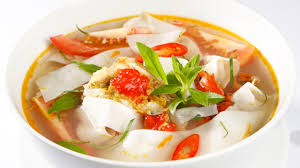

Canh chua cua nấu măng

- Khẩu phần 2
- Chuẩn bị 10 phút
- Thực hiện 10 phút
Nguyên liệu
- 1 con cua thịt làm sạch, chặt thành 6 miếng
- 200g măng chua
- 1 quả cà chua cắt múi
- 1 ít: me vắt (hòa nước sôi lấy nước me), ớt bột,
hành tím, ngò om, ngò gai
- Gia vị: nước mắm chấm , mắm ruốc, đường, dầu ăn,
từ Thịt Thăn, Xương Ống và Tủy - Bổ sung Vitamin A
Hướng dẫn thực hiện
- Bắc nồi, cho chút dầu vào phi thơm với hành tím. Cho cua vào xào lên.
Nêm ½ thìa mắm ruốc, ½ thìa nước mắm chấm và 1 thìa Hạt nêm từ
Thịt Thăn, Xương Ống và Tủy - Bổ sung Vitamin A. Tiếp tục cho hơn 1 tô nước
vào nấu sôi
- Tiếp theo, sẽ cho măng, ớt bột, nước me vào nấu sôi trở lại. Nêm thêm
thìa đường, và các gia vị khác cho vừa ăn thì tắt bếp.
- Múc canh nóng ra tô và cho ngò om, ngò gai và ớt xắt lát vào.